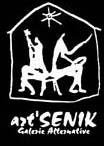

Art'Senik, Sophy Rotbard et sa galerie

Depuis 1997 cela fait bien longtemps que je n'ai pas présenté de site d'artistes plasticiens. Pourtant l'an 2000 m'en aurait offert l'occasion plus d'une fois avec la WebExpo 2000 de Malango. Mais l'an 2000 fut une trop court pour en parler et depuis le site web de malango a disparu.
Laissez moi donc vous présenter aujourd'hui Sophy Rotbard, une artiste installée à la Réunion qui présente des photos et des installations à l'esprit créole sur fluctuat.net. Sophy est la D.A. de Art'SENIK, une galerie, un espace artistique situé à la Ravine des Sables sur la commune de Saint-Leu. Coté sous le vent donc mais qui fait vent de ses activités sur le web. Art'SENIK est ainsi une galerie vivante où trois ans d'expositions invitent au détour et aussi à la réflection.
www.dekap.net puis artsenik.artblog.fr, lespace a changé plusieurs fois de nom de domaine mais ne se retrouvent maintenant plus en ligne.